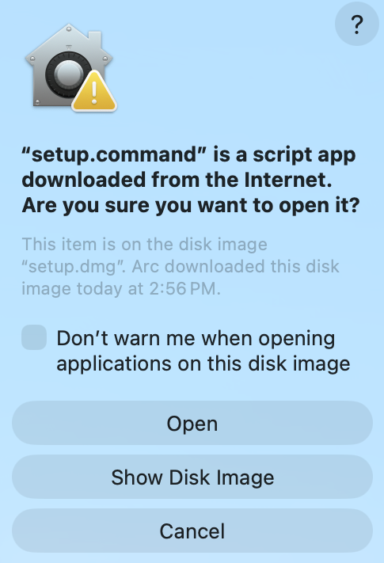
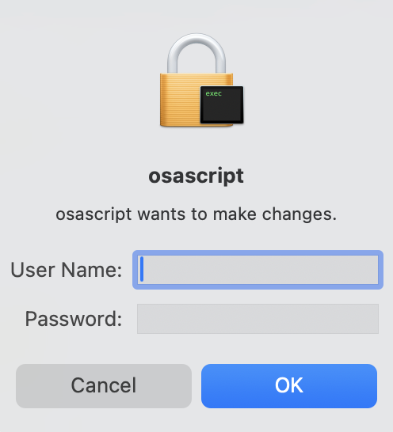
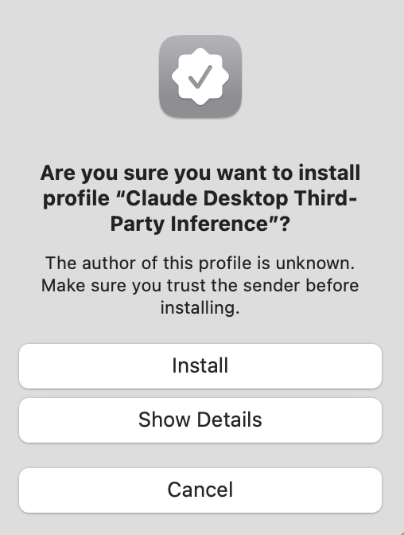
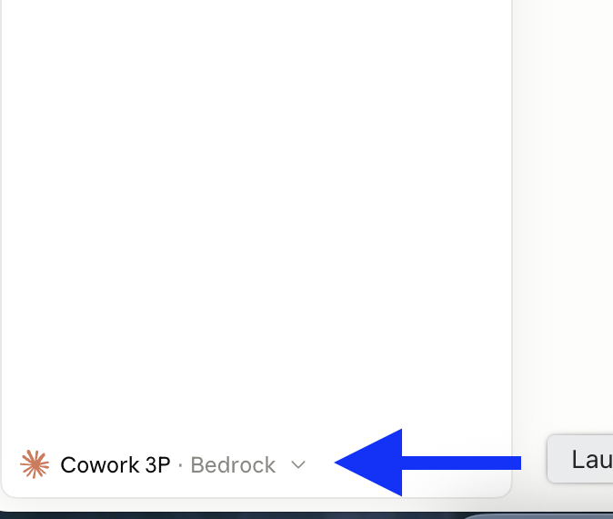

Download the Setup File
Click the button below to download setup.dmg to your Mac.
This will install Claude Code and Claude Desktop on your Mac using your organization's inference endpoint.
Open setup.dmg from your Downloads
Find the downloaded file in your Downloads folder and open it.
Open your Downloads folder — you'll see setup.dmg there. Double-click it to mount the disk image.

Double-click setup.command
Run the setup script from the mounted disk image window.
A window will open showing setup.command. Double-click it to launch the setup script.

macOS will show a security warning — this is expected. Click Open to proceed.

Let the Script Run & Enter Your Password
A Terminal window will open and install everything automatically.
A Terminal window will open and the script will begin installing Claude Code, Claude Desktop, and all required connectors. This may take a minute or two.

Partway through, a dialog will ask for your username and password so the script can apply the configuration profile. Enter your Mac credentials and click OK.

Safari will then open automatically and prompt you to sign in with your
Rakuten OKTA account. Enter your INTRA username
(username@rakuten.com) and click Next to authenticate.

Open Device Management via Spotlight
Use Spotlight Search to open Device Management in System Settings.
Press ⌘ Command + Space to open Spotlight Search, then follow the path for your macOS version:
Type "device management" and select Device Management from the results — it opens directly in System Settings.
Type "profiles" and select Profiles from the results.

Find the Downloaded Profile
Locate Rakuten Claude AI Configuration in the Downloaded section.
In the Device Management pane, scroll to the Downloaded section. You should see Rakuten Claude AI Configuration listed with a yellow warning badge indicating the profile is not yet installed.

Install the Profile
Double-click the profile and click Install… to apply it.
Double-click the profile entry to open the installation dialog. Review the profile details, then click Install… in the bottom-left corner to apply it. You may be prompted for your Mac password.

A confirmation dialog will appear warning that the profile author is unknown. This is expected for internally distributed profiles — click Install to continue.

Sign in with Rakuten AI (Bedrock)
Choose Continue with Rakuten AI (Bedrock) on the login screen.
Open Claude Desktop from your Applications folder. On the login screen, select Continue with Rakuten AI (Bedrock) — this connects Claude to your organization's inference endpoint instead of Anthropic's default servers.

Verify Your Setup
Confirm Claude is routed through Rakuten's endpoint before sending real prompts.
You're not done until both checks pass.
Open Claude Desktop and send this prompt:
A correct response will name a Claude model (Sonnet, Opus, or Haiku) and give today's date. If the response mentions it's running on Anthropic's public API, go back to the previous step and select Continue with Rakuten AI (Bedrock) again.
Look at the bottom-left corner of Claude. You should see Cowork 3P · Bedrock — this confirms your session is routed through Rakuten's Bedrock endpoint, not Anthropic's default servers.

You're all set!
Claude Desktop is ready to use with your organization's endpoint.
Setup is complete. Claude Desktop is now configured to use your organization's inference endpoint. Don't stare at an empty input box — try one of these:

- Pull my open JIRA tickets assigned this sprint and rank them by blocker risk.
- Summarize the last week of messages in #incidents-prod into a postmortem outline.
- Review this PR for SOX-relevant changes and flag anything risky.
- Find Confluence pages in the Platform Quality space that mention alerting and summarize the runbooks.